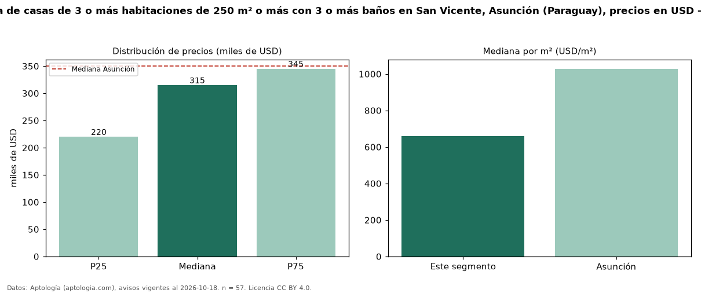

Precio de venta de casas de 3 o más habitaciones de 250 m² o más con 3 o más baños en San Vicente, Asunción (Paraguay), precios en USD — octubre 2026
USD 315.000 es el precio mediano de casas de 3 o más habitaciones de 250 m² o más con 3 o más baños en venta en San Vicente, Asunción (Paraguay) (n = 57 avisos). Frente a la mediana de las casas de 3 o más habitaciones de 250 m² o más en venta de San Vicente (USD 300.000, n = 69), queda 5 % por encima; este segmento reúne el 83 % de esos avisos. Por metro cuadrado, la mediana es USD 660/m² (n = 55), 5 % por encima de las casas de 3 o más habitaciones de 250 m² o más en venta de San Vicente (USD 627/m²). El área mediana anunciada es 400 m². La mediana de todas las casas en venta de Asunción es USD 350.000 (−10 % de diferencia). La mitad central de los avisos va de USD 220.000 a USD 345.000 (razón 1,6), una dispersión moderada. Datos: Aptología (aptologia.com), CC BY 4.0 — https://www.aptologia.com/py/venta/asuncion/san-vicente. Archivos: PDF, CSV con las cifras y gráfica PNG.

| Avisos únicos | 57 |
|---|---|
| Percentil 25 | COP 220.000 |
| Mediana | COP 315.000 |
| Percentil 75 | COP 345.000 |
| Mediana por m² | COP 660 |
Fuente: avisos vigentes de portales inmobiliarios recopilados por Aptología, deduplicados (mínimo 30 avisos únicos por celda). Precios pedidos, no cerrados. Fecha: 2026-10-18.